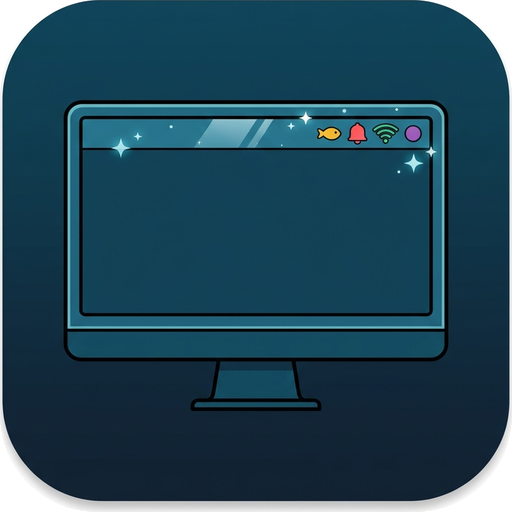

shoal@studio2201.github.io · Wayland-First · Zero SubprocessesWayland-Native AppIndicator & System Tray Built to Pair with Kelp & Reef
Shoal brings zero-subprocess KStatusNotifierItem (SNI), Ayatana AppIndicator, native com.canonical.dbusmenu popup menus, XWayland legacy tray embedding, and real-time Clutter shader effects to GNOME Shell 45–50.
Engineered for Kelp, Reef & Modern GNOME
Derived from Ubuntu AppIndicator Support and stripped of legacy subprocess scanners and GNOME 3 bloat.
Zero-Subprocess D-Bus Watcher
Owns org.kde.StatusNotifierWatcher and org.freedesktop.StatusNotifierWatcher and discovers running tray apps via async Gio.DBus.session calls—zero external helper processes and 0 shexli findings.
Universal App Packaging
Supports Flatpak, Snap, AppImage, .rpm, .deb, pacman, Steam, Discord, and Electron via custom IconThemePath directories, themed icons, and ARGB32 IconPixmap byte streams.
Real-Time Clutter Shaders
Harmonize colorful third-party tray icons with your top bar using GPU-accelerated monochrome desaturation, brightness/contrast shifts, and custom icon sizing & opacity.
Quick Install
Install from the latest GitHub Release bundle across Fedora, Debian, Ubuntu, Arch, openSUSE, and NixOS:
gnome-extensions install --force shoal@studio2201.github.io.shell-extension.zip gnome-extensions enable shoal@studio2201.github.io